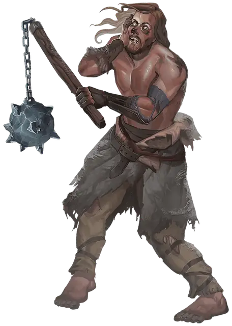

Чардалиновый берсерк
Chardalyn Berserker
Среднее Исчадие, хаотично-злое

Класс Доспеха 13 (шкурный доспех)
Хиты 90 (12к8 + 36)
Скорость 30 футов
| мод | спас | ||
|---|---|---|---|
| СИЛ | 16 | +3 | +3 |
| ЛОВ | 12 | +1 | +1 |
| ТЕЛ | 17 | +3 | +3 |
| мод | спас | ||
|---|---|---|---|
| ИНТ | 9 | −1 | −1 |
| МДР | 11 | +0 | +0 |
| ХАР | 9 | −1 | −1 |
Навыки Выживание +4
Чувства пассивное Восприятие 10
Языки Общий
Опасность 4 (1100 опыта)
Бонус мастерства +2
Особенности
Языки. Один любой язык (обычно Общий).
Безрассудство. В начале своего хода берсерк может решить, что в этом ходу все рукопашные атаки оружием будет совершать с преимуществом, но в этом случае до начала его следующего хода все броски атаки по нему тоже будут совершаться с преимуществом.
Чардалиновый психоз. В начале каждого своего хода берсерк должен бросить к6. При результате «1» берсерк ничего не делает в свой ход, а только говорит с несуществующим злым повелителем, которому он поклялся служить.
Действия
Мультиатака. Берсерк совершает три атаки рукопашным оружием.
Чардалиновый цеп. Рукопашная атака оружием: +5 к попаданию, досягаемость 5 фт., одна цель. Попадание: 7 (1к8 + 3) дробящего урона и цель должна преуспеть в спасброске Телосложения Сл 13, иначе станет отравленной до конца своего следующего хода.
Чардалиновое метательное копьё. Рукопашная или дальнобойная атака оружием: +5 к попаданию, досягаемость 5 фт., или дистанция 30/120 фт., одна цель. Попадание: 6 (1к6 + 3) колющего урона и цель должна преуспеть в спасброске Телосложения Сл 13, иначе станет отравленной до конца своего следующего хода.
Описание
Чардалиновые берсерки — это регхедские кочевники, которые владеют оружием, сделанным из чардалина, в частности те, что пропитались демонической магией (см. врезку о чардалине в главе «Добро пожаловать на Крайний Север»). Это влияние превратило их в исчадий. Они сбрасывают свою одежду и позволяют ледяному холоду промораживать насквозь открытые участки своих тел, и только вера в Морозную Деву сохраняет им жизнь.
Чардалиновое оружие. Чардалиновый берсерк владеет одним или несколькими видами оружия, полностью или частично изготовленными из испорченного демонической магией чардалина. Они любят боевые топоры, цепы, метательные и обычные копья, хотя возможны и другие варианты.
Персонаж, использующий одно или несколько таких оружий может быть подвержен такой же порче. Каждый день на рассвете бросьте к6 на каждый экземпляр такого оружия, находящегося в распоряжении персонажа. При результате «1» персонаж должен преуспеть в спасброске Харизмы Сл 13, иначе станет злым НИП под управлением Мастера, если персонаж уже не является злым. Это изменение мировоззрения может быть отменено любой снимающей проклятие магией, но если проходит десять дней то его можно отменить только заклинанием исполнение желаний [wish] или божественным вмешательством.
Существо, раненное одним из экземпляров чардалинового оружия может почувствовать внезапно накатившую тошноту, которая быстро проходит.
Чардалиновое безумие. Длительный контакт с демонической магией, запечатанной в чардалине, поражает берсерка формой безумия, при которой он верит, что его оружие является каналом для общения с демоническим лордом или другой темной силой, а также проводником его ярости. Если берсерка излечить с помощью магии, устраняющей эффект безумия, он теряет особенность «Чардалиновый психоз», но сохраняет хаотично-злое мировоззрение и другие свои качества. Если берсерка снова подвергнуть воздействию демонической магии, то безумие берсерка вернется к нему.